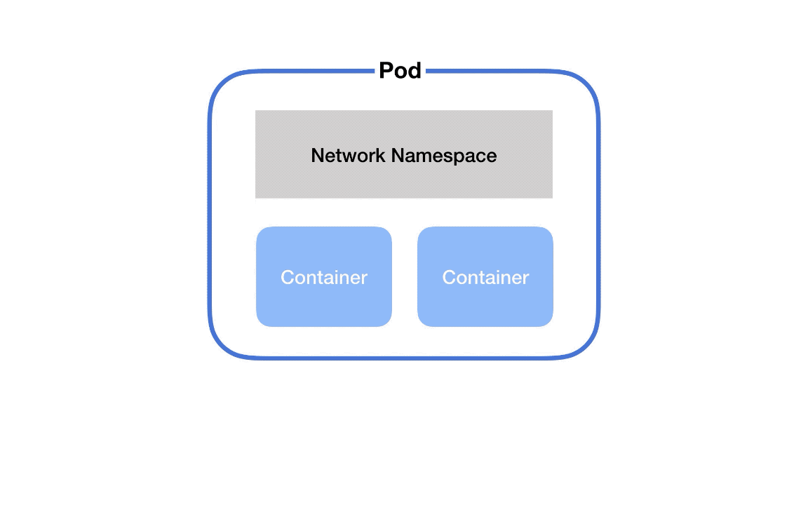
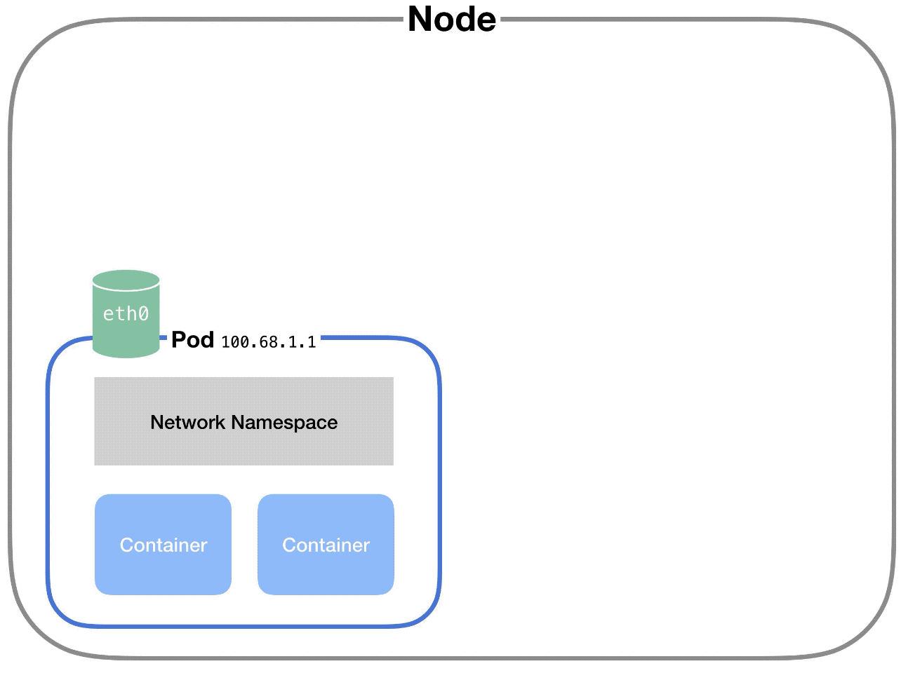
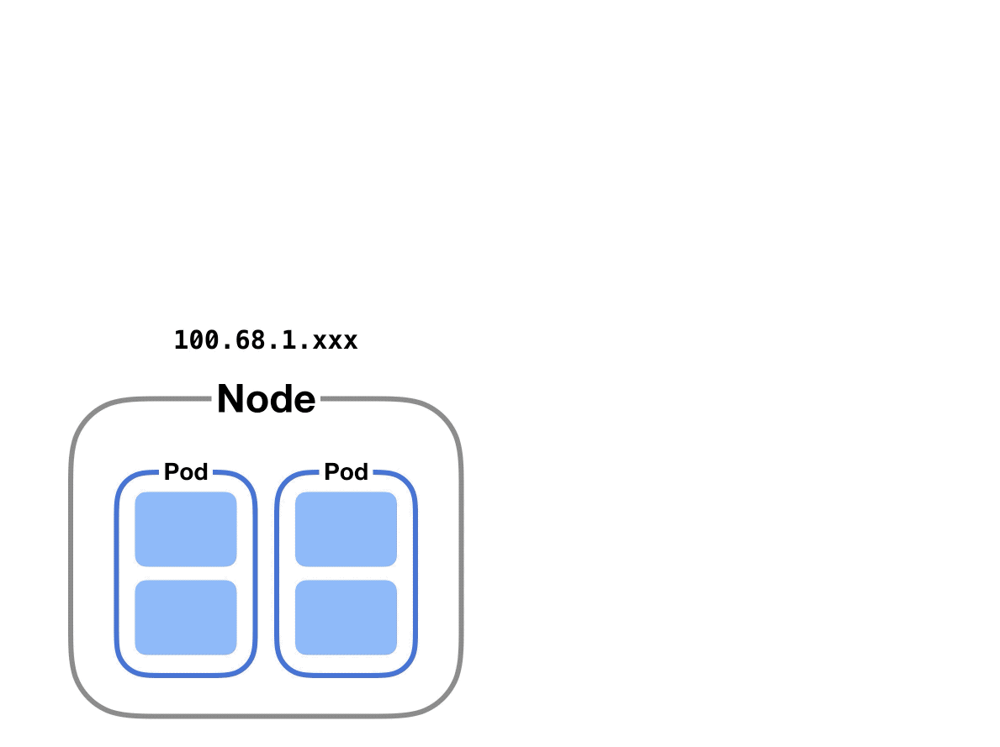

Kubernetes Networking Guide for Beginners
One of the hardest things to learn about Kubernetes as a software developer is how the networking works.
I had never done anything with networks prior to learning Kubernetes – I just wanted to deploy my code!
I started reading and immediately hit walls of jargon and inscrutable diagrams.
Here's my guide to Kubernetes networking for people who aren't networking experts.
There are five essential things to understand about networking in Kubernetes
- Communication between containers in the same pod
- Communication between pods on the same node
- Communication between pods on different nodes
- Communication between pods and services
- How does DNS work? How do we discover IP addresses?

Communication between containers in the same pod
First, if you've got two containers running in the same pod, how do they talk to each other?
This happens via localhost and port numbers. Just like when you’re running multiple servers on your own laptop.
This is possible because containers in the same pod are in the same network namespace – they share networking resources.
What is a network namespace?
It’s a collection of network interfaces (connections between two pieces of equipment on a network) and routing tables (instructions for where to send network packets).
Namespaces are helpful because you can have many network namespaces on the same virtual machine without collisions or interference.
(You wouldn’t want all your pods to run containers that listen on port 3000 in the same namespace – they’d all collide!)
There’s a secret container that runs on every pod in Kubernetes. This container’s #1 job is to keep the namespace open in case all the other containers on the pod die. It’s called the pause container.
So, each pod gets its own network namespace. Containers in the same pod are in the same network namespace. This is why you can talk between containers via localhost and why you need to watch out for port conflicts when you’ve got multiple containers in the same pod.

Communication between pods on the same node
Each pod on a node has its own network namespace. Each pod has its own IP address.
And each pod thinks it has a totally normal ethernet device called eth0 to make network requests through. But Kubernetes is faking it – it’s just a virtual ethernet connection.
Each pod’s eth0 device is actually connected to a virtual ethernet device in the node.
A virtual ethernet device is a tunnel that connects the pod’s network with the node. This connection has two sides – on the pod’s side, it’s named eth0, and on the node’s side, it’s named vethX.
Why the X? There’s a vethX connection for every pod on the node. (So they’d be veth1, veth2, veth3, etc.)
When a pod makes a request to the IP address of another node, it makes that request through its own eth0 interface. This tunnels to the node’s respective virtual vethX interface.
But then how does the request get to the other pod?
The node uses a network bridge.
What is a Network Bridge?
A network bridge connects two networks together. When a request hits the bridge, the bridge asks all the connected devices (i.e. pods) if they have the right IP address to handle the original request.
(Remember that each pod has its own IP address and it knows its own IP address.)
If one of the devices does, the bridge will store this information and also forward data to the original back so that its network request is completed.
In Kubernetes, this bridge is called cbr0. Every pod on a node is part of the bridge, and the bridge connects all pods on the same node together.

Communication between pods on different nodes
But what if pods are on different nodes?
Well, when the network bridge asks all the connected devices (i.e. pods) if they have the right IP address, none of them will say yes.
(Note that this part can vary based on the cloud provider and networking plugins.)
After that, the bridge falls back to the default gateway. This goes up to the cluster level and looks for the IP address.
At the cluster level, there’s a table that maps IP address ranges to various nodes. Pods on those nodes will have been assigned IP addresses from those ranges.
For example, Kubernetes might give pods on node 1 addresses like 100.96.1.1, 100.96.1.2, etc. And Kubernetes gives pods on node 2 addresses like 100.96.2.1, 100.96.2.2, and so on.
Then this table will store the fact that IP addresses that look like 100.96.1.xxx should go to node 1, and addresses like 100.96.2.xxx need to go to node 2.
After we’ve figured out which node to send the request to, the process proceeds the roughly same as if the pods had been on the same node all along.

Communication between pods and services
One last communication pattern is important in Kubernetes.
In Kubernetes, a service lets you map a single IP address to a set of pods. You make requests to one endpoint (domain name/IP address) and the service proxies requests to a pod in that service.
This happens via kube-proxy a small process that Kubernetes runs inside every node.
This process maps virtual IP addresses to a group of actual pod IP addresses.
Once kube-proxy has mapped the service virtual IP to an actual pod IP, the request proceeds as in the above sections.
How does DNS work? How do we discover IP addresses?
DNS is the system for converting domain names to IP addresses.
Kubernetes clusters have a service responsible for DNS resolution.
Every service in a cluster is assigned a domain name like my-service.my-namespace.svc.cluster.local.
Pods are automatically given a DNS name, and can also specify their own using the hostname and subdomain properties in their YAML config.
So when a request is made to a service via its domain name, the DNS service resolves it to the IP address of the service.
Then kube-proxy converts that service's IP address into a pod IP address. After that, based on whether the pods are on the same node or on different nodes, the request follows one of the paths explained above.
Enjoyed this article? Check out the complete book.